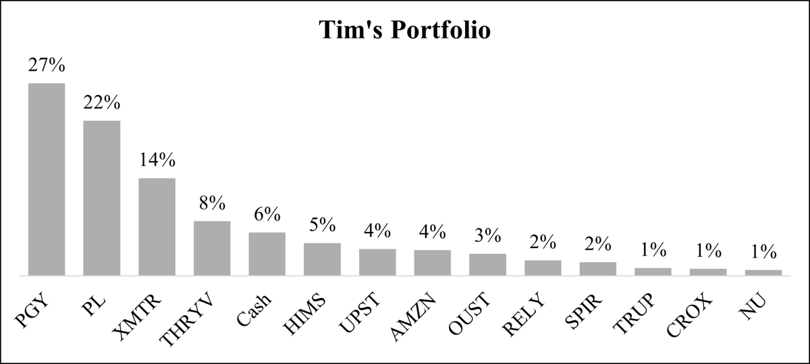

Mid Year 2025 Letter
Trailing returns (cumulative)
| Period | Portfolio | SPY | QQQ |
|---|---|---|---|
| 1 year | +129.2% | +14.5% | +15.4% |
| 2 year | +153.5% | +43.7% | +51.3% |
| 3 year | +184.3% | +69.4% | +100.0% |
| Since inception (Jan. 1, 2022) | +92.8% | +34.7% | +40.8% |
| Annualized since inception | +20.6% | +8.9% | +10.3% |
Calendar year returns
| Period | Portfolio | SPY | QQQ |
|---|---|---|---|
| 2025 (through June 30) | +31.6% | +6.3% | +8.4% |
| 2024 | +73.2% | +24.9% | +25.6% |
| 2023 | +24.6% | +26.2% | +54.9% |
| 2022 | -32.1% | -18.2% | -32.6% |
Portfolio returns are calculated by Fidelity and represent the total time-weighted performance as of June 30, 2025. SPY and QQQ returns are from Yahoo Finance and StatMuse.
A quick personal note – I recently got engaged, and writing this letter took a backseat to early stage wedding planning. I apologize for the delay. I will keep this letter relatively brief.
Three and a half years ago, I made a bet on myself. The stock market took a hit in 2022, and the revised opportunity set pushed me to try something new and abandon the index-centric approach I had favored until then. I knew the risks, but I wanted to compete and try to beat the market over the long run. Throughout 2022 and early 2023, I sold all of my index funds and entered the stock picking game.
So far, the strategy has shown some signs of merit. The first two years were pretty much a disaster. The last 18 months have been pretty terrific. Overall, I’ve compounded at around 20% annually, roughly ten points higher than the market. I don’t think there is a big lesson here – we are only three and a half years into a multi-decade game – nor do I think this level of outperformance is likely sustainable, but I do think it’s worth reflecting on the decisions that got us here.
Those decisions are best reflected by the companies I own today, so let’s tour a few names.

Planet Labs was probably the first stock I bought in significant size. I started buying in early 2023 at almost $5 per share, and for the next 18 months, the stock marched steadily lower. I bought the whole way down. Today, my average cost basis is $3.12, but the way I think about the future of the business, it shouldn’t matter too much if my cost basis is $2, $5, or anything in between. If that view turns out to be reasonably accurate, I should do alright.
What drew me to Planet is it being a true “one-of-one” business. Differentiation is a function of doing something differently, and Planet is very different from competitors. It designs, builds, and operates the largest fleet of earth observation satellites and has been the only company to image the entire Earth every day for eight years now. This dataset is a core, daily compounding advantage.
I own the company because I believe the data it produces is immensely valuable, extremely difficult to replicate, yet still poorly monetized. Over the next decade, I expect the economic value of this data to increase non-linearly, and the gap between the value Planet creates and captures to narrow. Scaling up new constellations, increasing fusion of multiple sensors and data types, and moving further up the value chain into delivering solutions to customers, not raw data, will support this value unlock. It is much easier to sell answers than data, and AI is an accelerant to this endgame.
When I started buying Pagaya in early 2024, I had no idea it would turn into my largest position today. I simply saw a disconnect between what I viewed as a founder-led company with a uniquely powerful business model and a consistent track record of growth – even through a major credit cycle – and what the market viewed as a questionable second-look loan originator. I spent a lot of effort trying to understand what I was missing or where I might be wrong but came away each time thinking if it looked and smelled like a good business, it just might be.
I invested a lot of time and money into Pagaya, and it’s paid off much faster than I would have guessed, though the process was accelerated by multiple expansion. In other words, more people have come around to the view it is a viable business with lots of potential, but there is still a lot of work to be done. I expect future returns to be much more closely tied to the fundamental progression of the business, but I’m in it for the long run.
The overarching theme of AI in consumer credit brings another portfolio name, Upstart, into the discussion. Each company approaches the problem slightly differently, but with a similarly thoughtful business model backed by focused execution. In general, I think the problem of consumer credit is a massive opportunity, AI is a perfectly matched solution, and as a result, the industry is likely to evolve significantly over time. I expect Pagaya and Upstart to be major winners from this reshuffling.
Let’s now talk about a different name: Thryv. Very basic business model, nothing too differentiated about it. I’m invested in the company, and recently increased the size of my investment, for one main reason: the leadership. It’s a jockey bet. Joe Walsh successfully executed the same print to SaaS business model transition Thryv is currently undergoing at a prior company. At that company, shareholders earned a ~20x return. History doesn’t repeat, but it rhymes, and great operators tend to remain great operators.
Thryv participates in a massive market with countless permutations of competitors, but I think the greenfield aspect of the opportunity is often overlooked. There is ample growth to be had by simply growing into evolving demand, not necessarily stealing share from competitors. I believe that distinction is important and commonly not given enough weight.
Thryv’s core advantage is its ability to leverage longstanding relationships with small business owners across the country to sell locally at scale. This model allows them to more effectively capitalize on the natural evolution of SMB demand towards SaaS while maintaining a profitable business model (that is, not overspending on customer acquisition). I think it will just take solid execution for shareholders to reach a good outcome, and Joe Walsh is the guy to do it.
One last note on Thryv: I highly recommend listening – not just reading the transcript – to every earnings call. The CEO and CFO have a great rapport, having worked together for something like two decades, and sometimes I think Joe Walsh doesn’t prepare any notes and just talks off the top of his head; the candor is truly refreshing and appreciated.
Turning to Spire Global. I sold a sizable chunk of my position early this year, so it’s worth unpacking the decision. I think every investment thesis exists on a continuum between people-led and business model-led; you need both, but I find it typically leans one way. With Spire, the business model is what drew me in (it is quite Planet-esque), but Peter Platzer seemed to be the relentless driving force behind its success. He sold a clear vision, and he seemed committed to building a generational business.
Then he stepped down as CEO, and I lost the people-led story. If you repeatedly outline a vision for the business measured in decades, why move to a non-operational role in the early innings? Was it a board-led move? Did he not believe in the company anymore? And why is his wife now the CEO?
These are questions to which I don’t have good answers, and while I still think Spire is a unique asset, I became uncomfortable owning the company in size. Do I still believe its prospects skew positively? Yes. Am I confused about what’s going on at the top? Yes. Did I want to reduce some uncertainty and wait for the fog to clear? Yes. Do I think there is a chance I will be a buyer again in the future? Again, yes.
Xometry recently blew earnings out of the water, and the stock jumped over 40% on the day. Volatility has been par for the course over the last three years, though not always to the upside. While I have no evidence to support this, I suspect the extreme price action reflects a constantly evolving view of the bigger picture; the market hasn’t decided if it believes in it or not, but it recognizes something is there.
The bigger picture, as I see it, is that Xometry is digitizing a massive industry. Buying custom parts is a tedious, analog process today. Not many companies are trying to solve the problem in the same way as Xometry, and of those players, it is by far the largest. Xometry’s approach is particularly powerful because scale accrues to its advantage. From my view, it’s a classic digital marketplace disruption story.
Xometry’s business is enabled by an AI instant quoting engine. This technology alone is not a competitive advantage; it’s a foundational technology layer that allows them to pursue a new business model category and offer a “wow” customer experience. Xometry’s primary competitive advantage is the scale and scope of its network, and as it continues to grow, I expect this advantage to deepen. It’s classic network effects.
I believe scale wins on the internet, and if you can remove the friction from a manual / analog sourcing process, people will choose digital every time. That’s the crux of the thesis: millions of custom parts are transacted each year, and Xometry is going to steadily take share of that volume. I think this provides a long runway to grow whether or not they really excel in production (though I think they likely will). Production is no doubt an accelerant – an offensive move to drive further scale – but I think if Xometry were to simply dominate the prototyping market, it would still be a successful outcome for shareholders.
Remitly is my most recent purchase, only a few weeks ago. Let me preface this by saying I pride myself on inactivity. I don’t want to be too frequent a market participant, because it can degrade the advantage of a long time horizon. I try to use that edge intentionally and only invest in situations where I have a differentiated view on what a company will look like, and what its future prospects will be, five or ten years out. Not if I think they will beat earnings next quarter or next year, but if I think the company’s business model will be fundamentally better, and benefit from a more advantaged market position, way out in the future – and I don’t think that view is reflected in the market’s expectations.
Back to Remitly. I’ve been following the company for around a year now and became interested when Mario Cibelli pitched it on the Yet Another Value Podcast. I work in payments, so remittance is a business model and market I am quite familiar with but hadn’t really looked at for investment before. This year, however, the market soured on the company’s narrative. This seemed to be at odds with a business that was firing on all cylinders, so I bought a small stake.
Remitly was an instinctual purchase. The time seemed right; I had become more comfortable with the story, more positive on leadership, and had reason to argue with the prevailing view. The industry is in a secular transition, and Remitly is on the right side of the disruption. The source of the market’s pessimism doesn’t particularly concern me; the fact is expectations were lowered, and the investment equation had changed. I’m happy to have some skin in the game and look forward to learning more as an owner.
This example is broadly indicative of how I approach investing. I often lean into my instincts and am happy to take a small stake prior to doing intensive research. I know my returns will ultimately depend on the very few companies in which I have invested a substantial amount of money. That’s the advantage of concentration.
At the same time, buying a small position in a company allows you to feel what it’s like to be an owner. I think tracking a company as an owner is a fundamentally different process and emotional experience than following it as an analyst. It unlocks a new perspective and allows you to make a better decision about whether you really want to be involved for the long term.
One question I’ve started to ask, to get a better sense of whether I want to be involved, is would I want to work there? Do I read about this company, recognize the problem they are solving, understand how they are executing on that promise, and get excited about the future?
I would be willing to work for most of the businesses I own today (not sure if pet insurance or plastic shoes are truly my passion). I don’t think my skill sets commonly overlap with their needs, but they each seem like an exciting place to work, and I think that filter has proven additive to my investment process.
Investing is a forward looking game. The last 18 months have been great. The last 42 months have been good. But the most important thing is I am still confident in the future. My historical returns have been exceptionally volatile, and I don’t necessarily expect that to change – I am heavily invested in emerging growth companies, and they will continue to swing alongside the public narrative – but I do remain confident that over the long term, the stock price will move directionally alongside the fundamental progression of the business. And that should be enough.
– Tim Gallagher